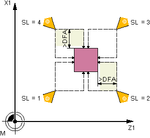
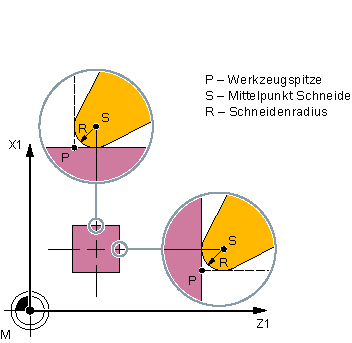

Funktion
Mit dieser Messvariante kann die Werkzeuglänge (L1 und/oder L2) eines Drehwerkzeugs mit den Schneidenlagen 1 bis 8 ermittelt werden. Die Messvariante prüft, ob die zu korrigierende Differenz zur alten Werkzeuglänge innerhalb eines definierten Toleranzbereiches liegt:
-
Obergrenzen: Vertrauensbereich TSA und Maßdifferenzkontrolle DIF
-
Untergrenze: Nullkorrekturbereich TZL
Bei Einhaltung dieses Bereichs wird die neue Werkzeuglänge in die Werkzeugkorrektur übernommen, anderenfalls bei Überschreitung eine Alarmmeldung ausgegeben. Bei Unterschreitung der Untergrenze wird nicht korrigiert.
Messprinzip
Beim Messen "komplett" werden alle Längen eines Drehwerkzeugs gemessen:
-
Drehwerkzeug mit Schneidenlage 1 bis 4: L1 und L2
-
Drehwerkzeug mit Schneidenlage 5 oder 7: L2
-
Drehwerkzeug mit Schneidenlage 6 oder 8: L1
Hat das Drehwerkzeug eine Schneidenlage 1 bis 4, wird in beiden Achsen der Ebene (bei G18 Z und X) an den Messtaster angetastet, wobei die Messung mit der 1. Achse der Ebene (bei G18 Z) beginnt. Bei den Schneidenlagen 5 bis 8 wird nur in einer Achse gemessen:
-
Schneidenlage 5 oder 7: 1. Messachse bei G18 Z
-
Schneidenlage 6 oder 8: 2. Messachse bei G18 X.
Beim Messen "achsweise" wird die Länge des Drehwerkzeugs in der parametrierten Messachse gemessen.

Messen: Drehwerkzeug (CYCLE982), Beispiel: komplett messen
Voraussetzungen
Der Werkzeugmesstaster muss kalibriert sein, siehe Abgleich Messtaster (CYCLE971).
Die ungefähren Werkzeugabmessungen müssen in die Werkzeugkorrekturdaten eingegeben sein:
Werkzeugtyp 5xx
Schneidenlage, Schneidenradius
Längen in X und Z
Das zu vermessende Werkzeug muss mit seinen Werkzeugkorrekturwerten bei Zyklusaufruf aktiv sein.
Ausgangsposition vor dem Messen
Vor Zyklusaufruf muss eine Startposition der Werkzeugspitze entsprechend dem folgenden Bild eingenommen werden.
Schneidenlagen 1 bis 4 und passende Ausgangspositionen für beide Achsen
Die jeweilige Mitte des Werkzeugmesstasters und die Anfahrtswege werden automatisch berechnet und die erforderlichen Verfahrsätze erzeugt. Die Schneidenradiusmitte wird auf die Mitte des Messtasters positioniert.
Drehwerkzeug Länge messen: Versatz um Schneidenradius, Beispiel SL=3
Position nach Messzyklus-Ende
Beim Messen "achsweise" steht die Werkzeugspitze um den Messweg gegenüber der angetasteten Messfläche des Messtasters.
Beim Messen "komplett" wird das Werkzeug nach der Messung auf den Startpunkt vor Zyklusaufruf positioniert.